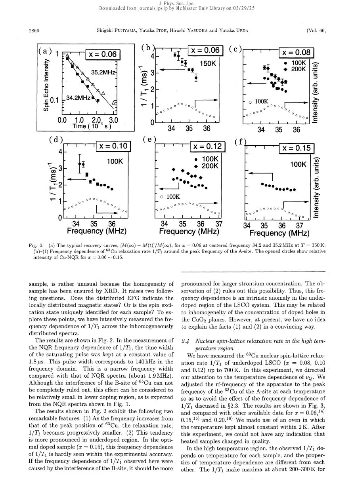
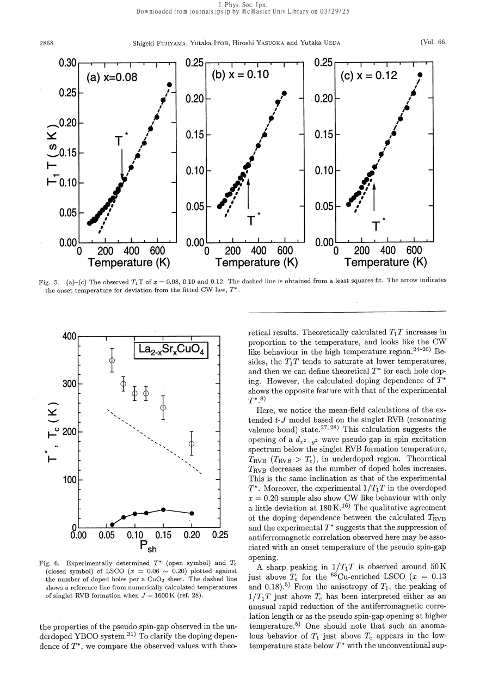

experiment · Fujiyama · supplied source 1997
Anomalous Spin Excitation in the Metallic State of La2-xSrxCuO4 Observed by Cu NQR
A broad Cu NQR spectrum selects locally different relaxation responses; high-temperature departures from Curie-Weiss behavior cannot be read from one universal line.
The question: How do underdoped LSCO spin dynamics depend on temperature and position within the NQR spectrum?
Before you start: the few terms you need
- LSCO: layered La2-xSrxCuO4; nominal x is Sr per formula unit
- Local probe: a distribution can matter even when the bulk average barely changes
See → explain → test
Understand it in four pictures.
Picture 1 / 4
Separate the resonances
Look for: Each A or B environment also has two Cu isotopes.
Swipe across the picture to read every label, or enlarge it below.
- A and B electric environments
- 63Cu and 65Cu at each
- Four overlapping contributions
Teaching schematic. Environment and isotope are separate labels; neither counts magnetic phases.
Several peaks do not automatically mean several magnetic phases.
Check the original: PDF p. 2
Picture 2 / 4
Scan within A
Look for: Lower-frequency and higher-frequency A-site nuclei relax differently.
Swipe across the picture to read every label, or enlarge it below.
- Lower A frequency
- Higher A frequency
Teaching schematic. Source trend; no data points or fitted rate are reproduced.
Frequency-dependent 1/T1 reveals an inhomogeneous local response, strongest at low doping.
Check the original: PDF p. 3
Picture 3 / 4
Use the right temperature variable
Look for: The reciprocal T1T follows a high-temperature Curie-Weiss baseline.
Swipe across the picture to read every label, or enlarge it below.
- High-T fit
- Cooling deviation
- T* crossover
Teaching schematic. The source uses 1/T1T = C/(T + θ), with doping-dependent fitted parameters.
Departure below T* is a crossover criterion, not necessarily a maximum in 1/T1T.
Picture 4 / 4
Keep disorder in the explanation
Look for: The measured local response must be interpreted alongside the doping trend.
Swipe across the picture to read every label, or enlarge it below.
- Rate + spectral variation
- Pseudospin-gap interpretation
- Disorder affects dynamics
Teaching schematic. A relaxation suppression alone does not reconstruct a full momentum-resolved gap.
The source proposes pseudospin-gap suppression while retaining microscopic inhomogeneity.
Predict before revealing
If a single broad A line has frequency-dependent 1/T1, can its peak rate represent every local environment?
Choose an answer, then compare the reasoning.
The selected nuclei sample different portions of the electric-gradient distribution and have measurably different relaxation.
Read the answer
No, frequency slices have different measured responses The selected nuclei sample different portions of the electric-gradient distribution and have measurably different relaxation.
Go deeper Follow the full argument
Why extend LSCO measurements to high temperature
Fujiyama and colleagues measure planar Cu NQR spin-lattice relaxation up to 700 K in underdoped x = 0.08, 0.10 and 0.12 powders, and compare with x = 0.06, 0.15 and 0.20 results. LSCO has a single CuO2 layer, so a suppression of low-frequency spin fluctuations in this system challenges explanations requiring a bilayer. The samples are checked by x-ray diffraction and superconducting onset is determined through the NQR probe-coil response. The central question is not just whether a relaxation maximum exists above Tc. It is whether the high-temperature baseline is left at a doping-dependent crossover, and whether one measured rate represents the whole sample.
Electric gradients and the A/B spectrum
The zero-field spectra are decomposed into A and B environments, each with 63Cu and 65Cu isotope peaks. NQR frequency depends on the nuclear quadrupole moment and local electric-field-gradient tensor. The A peak shifts upward with Sr concentration, while the broad linewidth varies much less over the doped range than a simple proportional lattice-distortion explanation would suggest. A lightly substituted metallic sample is already much broader than undoped La2CuO4. The authors associate this with a broad local electronic contribution to the gradient, but do not claim that frequency is a direct image of a stripe pattern or that the A/B microscopic assignment has been uniquely settled.
Frequency selects different spin dynamics
Short excitation pulses select a narrow frequency slice compared with the full broad line. Across the A resonance, 1/T1 decreases as frequency rises, and this contrast is especially strong in lower-doping samples. Near optimal x = 0.15 it becomes small within accuracy. The authors examine contamination from the overlapping 65Cu B line and argue that its expected doping trend does not explain the observed effect. The observation therefore ties the inhomogeneous gradient distribution to locally varying spin dynamics. It remains an inference about a distribution of electronic environments, rather than proof that every local environment corresponds to one precisely known hole number.
The crossover is defined by a baseline departure
For high-temperature measurements the apparatus tracks the moving A-site peak, reducing bias from the frequency dependence. The observed 1/T1 is not universally constant across the samples and often has a broad maximum around 200 to 300 K. Plotting T1T makes the high-temperature Curie-Weiss baseline linear. Its fit gives doping-dependent C and θ, and a downward-temperature departure defines T*. In underdoped samples T* falls as hole concentration rises, remaining well above Tc. A simplistic exchange-narrowed local-moment calculation overestimates the rate and does not capture the observed doping dependence. The source consequently compares nearly antiferromagnetic-metal and t-J/RVB descriptions.
Interpretation without turning a crossover into a transition
The authors call the suppression relative to the Curie-Weiss expectation a pseudospin-gap effect. They find its doping trend qualitatively similar to a singlet-RVB scale and to underdoped YBCO, but point out failures in parts of the competing calculations. The high-temperature C variation is not reproduced by a model with a doping-independent exchange parameter alone. Moreover, a clear maximum of 1/T1T is not required to identify the departure; the local inhomogeneity can alter its shape. The paper ends by emphasizing that Sr-associated disorder and locally different spin environments cannot be neglected. This is a historical model comparison based on low-frequency NQR, not a complete measurement of the excitation spectrum.
How to compare the evidence
Read a frequency-resolved relaxation plot as a comparison within one crystal or powder composition, not only between different nominal dopings. The excitation bandwidth selects a narrow portion of an inhomogeneous line. A rate that changes across that line is therefore additional information beyond its total width. Here the authors explicitly test whether overlapping A/B and isotope lines can account for the trend. Their argument favors local electronic variation, but NQR frequency still combines local charge, lattice and electric-field-gradient contributions. It should not be converted into a literal hole count without a calibration. When comparing T* across papers, also check its operational definition: departure from a high-temperature extrapolation need not occur at the same temperature as a maximum in 1/(T1T).
Translate the mathematics Key equations and symbol meanings
νQ = (e²qQ/2h) sqrt(1 + η²/3)
Symbols: q: gradient principal component in the source convention; Q: nuclear quadrupole moment; η: asymmetry; h: Planck constant.
NQR selects electric environments; magnetic relaxation at those frequencies probes their associated spin dynamics.
1/(T1T) = C/(T + θ)
Symbols: C: fitted amplitude; θ: Weiss offset; T: temperature.
A baseline used to define departure T*, not a unique microscopic theory.
Read the evidence A guided look at the original figures

Open the full original page ↗

Open the full original page ↗
What this paper does—and does not—establish
- Full six-page scan read visually; extraction supplies watermark text rather than body.
- No unique A/B microscopic assignment or full spin-gap spectrum is established.
- Historical 1997 interpretations are identified as such.
Explain it back.
Try answering aloud before opening the explanation.
Why distinguish 1/T1 from 1/T1T?
They have different temperature trends; the Curie-Weiss comparison uses the latter.
Does a broad NQR line alone prove stripes?
No. Both lattice and electronic gradient variations, and magnetic effects, require discrimination.
Is T* defined here as Tc?
No. It is a high-temperature baseline departure and remains above superconducting Tc.
Connect the next paper.
Source version, reading coverage and preservation
Complete scanned source read visually at full page size, including main equations and figures
Reviewed body pages: 1, 2, 3, 4, 5, 6. References checked as a bibliography but cited works were not independently re-read.
Original file retained byte for byte. SHA-256: f4e8a3de979b03e7377f90dbb96f9b1adde95151220ab5c44c5025e9ff3aefb3
Filename: JPSJ - Fujiyama - Anomalous metallic spin excitation in LSCO by Cu NQR - 1997.pdf.